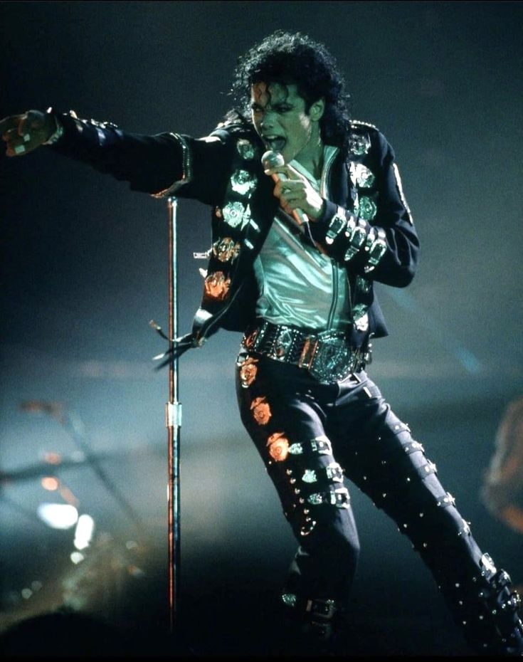
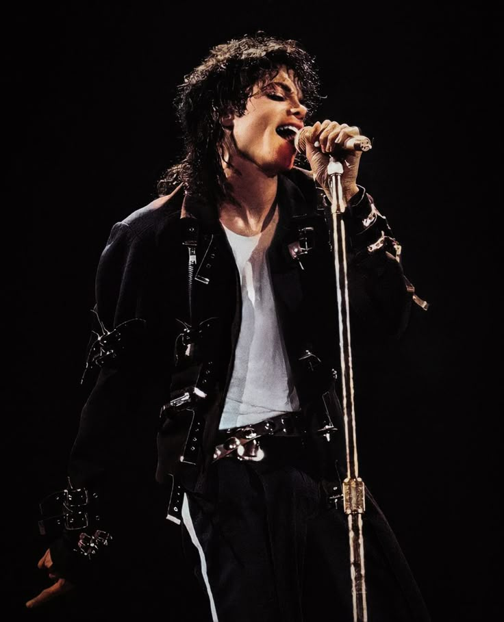
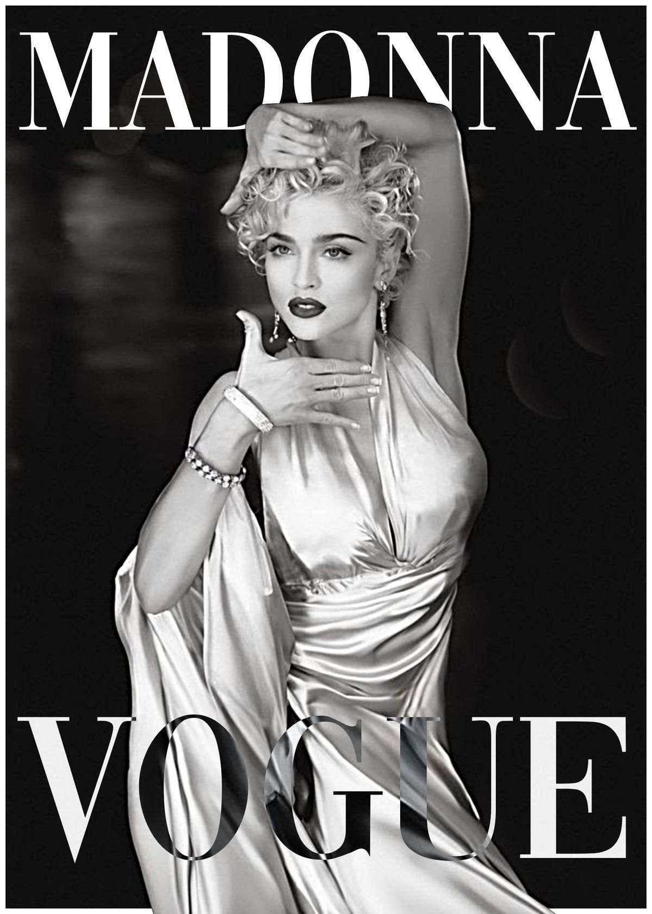
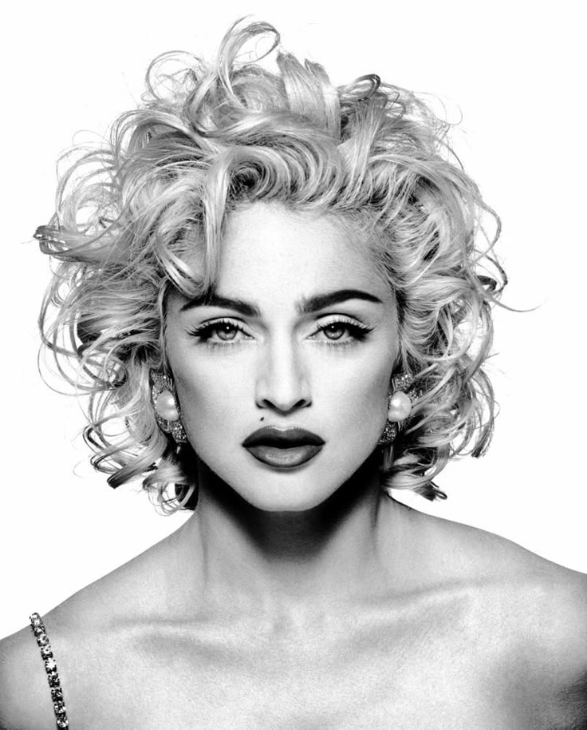
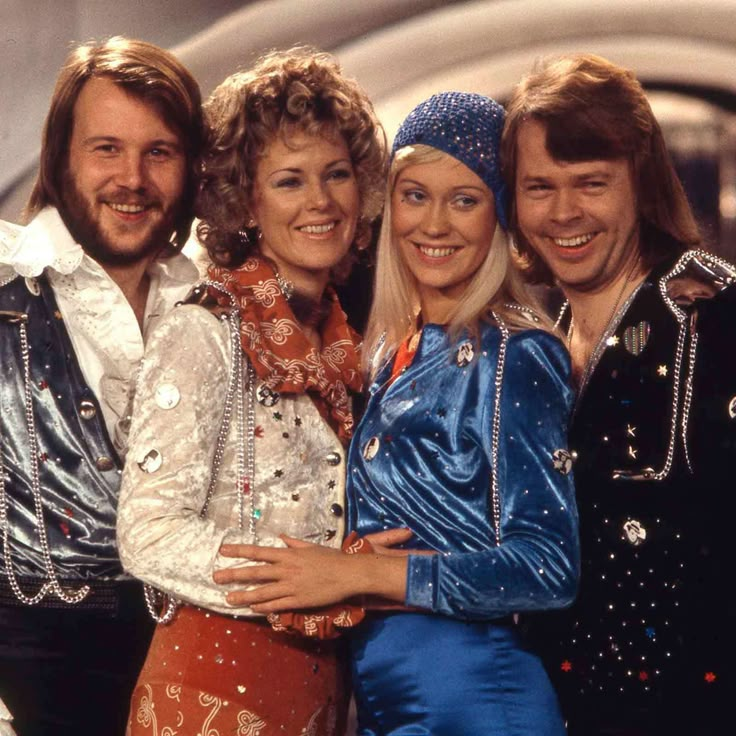
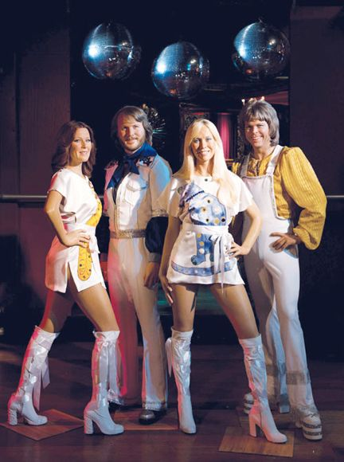

Pop Music
Pop music emerged in the mid-1950s as a commercially-oriented genre designed for mass appeal and radio consumption. The term "pop" itself is short for "popular," reflecting its primary goal of reaching the widest possible audience. Pop music is characterized by its accessibility, featuring catchy melodies that stick in listeners' heads, simple yet effective harmonies, and production techniques optimized for radio play and streaming platforms. The structural foundation of pop music typically follows a verse-chorus format, with verses telling a story or setting up emotions and choruses delivering the memorable, sing-along moments that define the song. This predictable structure makes pop music immediately accessible to new listeners while providing enough variation to maintain interest. The lyrics often focus on universal themes like love, relationships, youth, and personal experiences that resonate across diverse demographics. Pop music's greatest strength lies in its adaptability. Unlike genres with rigid stylistic boundaries, pop constantly evolves by absorbing elements from other musical styles. In the 1960s, pop incorporated rock and folk influences. The 1980s saw the integration of electronic sounds and synthesizers. The 1990s brought hip-hop influences, while the 2000s embraced digital production techniques. Today's pop music seamlessly blends elements from EDM, trap, Latin music, and global influences, demonstrating the genre's chameleon-like ability to stay current. The production of pop music emphasizes clarity and impact. Engineers use compression, equalization, and modern mixing techniques to ensure songs sound good on everything from smartphone speakers to car stereos. This technical approach prioritizes immediate impact over subtle nuances, creating music that grabs attention in our increasingly noisy media environment.
Most famous Pop singers or bands
Michael Jackson
Michael Jackson (1958-2009) Known as the "King of Pop," Michael Jackson was one of the most successful entertainers in music history. He started as a child with the Jackson 5 before launching a solo career that included iconic albums like "Thriller" (1982), the best-selling album of all time. His innovative music videos, distinctive vocal style, and signature dance moves like the moonwalk made him a global cultural icon.


Madonna
Madonna (1958-) Often called the "Queen of Pop," Madonna Louise Ciccone revolutionized pop music and popular culture from the 1980s onward. Known for constantly reinventing her image and pushing boundaries, she achieved massive commercial success with albums like "Like a Virgin" and "Like a Prayer." She's also recognized for her influence on fashion, sexuality in pop culture, and female empowerment.


ABBA
ABBA (1972-1982) This Swedish pop group consisting of Agnetha Fältskog, Björn Ulvaeus, Benny Andersson, and Anni-Frid Lyngstad became one of the most commercially successful acts in music history. They gained international fame after winning Eurovision in 1974 with "Waterloo" and continued with hits like "Dancing Queen" and "Mamma Mia." Their music later inspired the successful musical and film franchise "Mamma Mia!"

